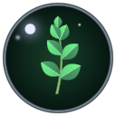

Herbalore
A voice for every herb.
Source and download · drop the Herbalore folder into Interface\AddOns.
Listen
What it does
- Every herb has three lines, from Peacebloom to Black Lotus: what it is, where it likes to grow, or something worth noticing. The ones you haven't heard come first.
- Nothing nags. Each line, and each herb, rests longer every time it's spoken (5 minutes, then 10, then 20 for a herb; 20, 40, 80 for a line), so an evening's gathering stays fresh.
- Quiet lines. Now and then, instead of a herb's line, a word about slowing down: gathering as a kind of listening.
- Skinning. A word of thanks the first time each session, then now and then. Every hide is a life given.
- Shares the air with Shan'do. Never in combat, never within 45 seconds of Shan'do or of itself.
- A notebook. Account-wide, Herbalore notes where each herb was picked (for drawing herb routes) and anything gathered that has no line yet (so it can get one). It stays in your saved variables.
- Minimap button at half opacity: left-click for the guide, right-click to turn it off or on, drag to move.
Commands
/herbalore | turn it off or on |
/herbalore help | the in-game guide |
Why
Made for immersion, meditation, repair and growth while wearing a night elf's face. It invites and never instructs, speaks about the world and the deed rather than the self, and stays in Azeroth. It is company, not therapy.
Every choice, and its evidence, is in RESEARCH.md.